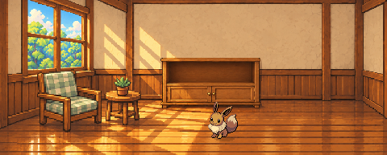

Комната собирается по предметам
В анимации по очереди меняется только один выбор: трофеи, шкаф, столик, растение, кресло. Иви продолжает исходную анимацию. Это просмотр художественной сборки, без игрового интерактива.

Дубовый шкаф, пустая полка
Все сочетания левого уголка